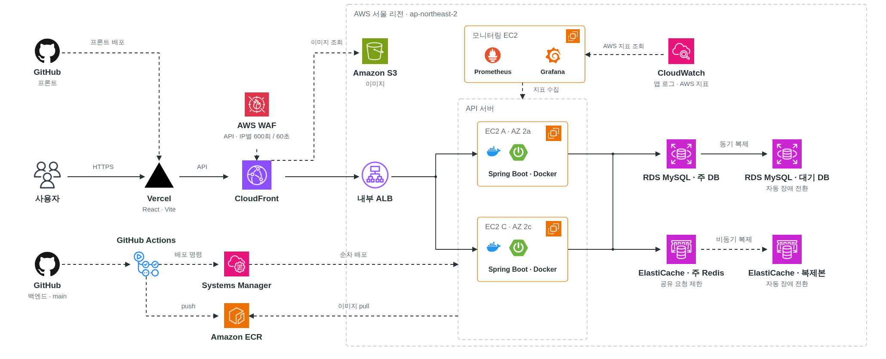

학력~
한신대학교
컴퓨터공학부 · 졸업
BACKEND DEVELOPER
개선을 제안하고 직접 구현하는 백엔드 개발자입니다.
비동기 처리로 AI 추천 요청의 HTTP 응답 대기를 약 98% 단축했습니다.
Redis 장애 시 취소 내역과 재고의 정합성을 판정하는 기능을 구현했습니다.
아키텍처와 공통 코드를 설계해 팀의 개발 기준을 표준화했습니다.
Core skills
학습하고 실제 개발에 적용해 온 기술
Credentials
백엔드 개발과 관련된 교육·학력, 자격 및 수상
컴퓨터공학부 · 졸업
멀티캠퍼스 · LG U+ 유레카 GETDDO
한국산업인력공단
한국데이터산업진흥원(Kdata)
Featured projects
적용한 해결 방법과 확인한 결과를 중심으로 정리한 프로젝트 기록
출석·미션·게임으로 응모권을 모아 경품 이벤트에 참여하는 서비스
담당 업무아키텍처·공통 코드·테스트 환경 설계, 사용자 기능 구현. AWS 인프라·CI/CD 구성과 장애 전환 검증, AI 개발·검토 기준 제안 및 적용
팀원이 기능을 나눠 개발할 때 모듈별 책임과 공통 처리 방식이 달라지지 않도록 개발 기준이 필요했음. 코드 구조뿐 아니라 테스트와 AI 작업에도 같은 기준을 적용하고자 했음.
이벤트·알림 API에 공통 요청 처리와 응답 형식을 적용하고, 기능별 통합 테스트에서 공통 DB 환경을 사용. 공통 지침과 참고 문서를 AI 구현·CodeRabbit 리뷰에 적용하고, 작업 기록은 AI 초안 작성 후 담당자 검토 방식으로 운영.
모듈별 책임을 문서와 코드 구조로 정했지만, 규칙 위반을 자동으로 검사하는 장치는 부족했음. ArchUnit 테스트를 CI에 추가해 잘못된 모듈 참조를 변경 단계에서 발견하도록 보완할 필요가 있음.

같은 IP에서 API를 과도하게 호출하면 반복 요청이 앱·DB 자원을 점유해 다른 사용자의 요청 처리에도 영향을 줄 수 있음. 앱에 도달하기 전에 과도한 요청을 제한할 필요가 있었음.
임시 ALB 응답 경로로 앱·DB에 부하를 주지 않고 같은 IP의 반복 요청 차단과 다른 IP의 정상 통과 확인. 요청 중단 후 규칙 변경 없이 자동 해제됐으며, OPTIONS·이미지 조회와 차단 로그 저장·민감 값 마스킹도 검증.
DB·Redis의 주 노드가 중단되면 DB 조회·저장이나 Redis를 사용하는 요청 처리가 실패할 수 있음. 대기 노드가 역할을 이어받은 뒤 앱이 다시 연결돼 기능을 복구하는지 확인할 필요가 있었음.
RDS Multi-AZ의 대기 DB와 다른 AZ의 Redis 복제본을 두어, 주 노드 장애 시 대기 노드가 역할을 이어받도록 설계. 두 API 서버가 같은 주 DB와 Redis를 사용하도록 구성.
실제 RDS 전환 중 조회 요청의 503과 자동 재연결 확인. Redis 복제본 승격 후에는 양쪽 API의 재연결과 실제 Redis 명령 처리를 관찰해 앱 재시작 없이 기존 기능이 복구된 것을 확인.
RDS 복구 후 기존 미션·응모 기능의 정상 처리 요청을 같은 키로 재전송해 추가 지급·응모·차감이 없음을 검증. 두 API의 조회도 재시작 없이 복구.
대기 DB와 Redis 복제본은 읽기 분산에 사용하지 않음. Redis는 비동기 복제라 전환 시 최근 변경분이 유실될 수 있음. 기능 복구 확인을 전체 요청의 무중단·무유실 보장으로 확대하지 않음.
한정 수량 쿠폰을 선착순으로 발급하는 서비스
담당 업무운영자가 발급 현황을 정확하게 확인할 수 있도록, 재요청의 중복 집계를 막고 저장소별 발급 기록을 비교하는 기능 구현. 회차 종료 후 운영 지표 정리와 누락된 종료 정보의 DB 조회 보정 구현
DB에 취소가 확정된 뒤 Redis 장애로 재고 복원 호출만 실패하면, 취소는 반영됐지만 재고는 복원되지 않은 상태가 남을 수 있음. 취소해도 누적 발급 이력은 남으므로, 양쪽 누적 건수가 같다는 것만으로 현재 재고를 정상으로 판단할 수 없음.
실제 Redis·MySQL에서 DB에는 취소를 반영하고 Redis 재고는 복원하지 않은 상태를 직접 구성. 누적 발급 수가 각각 4건으로 같아도 현재 수량 차이 1건을 탐지하고, FINAL 정합성 실패로 판정.
정상 상태와 수량 불일치를 구분하고, 필수 값 누락·조회 실패도 정상으로 판정하지 않는 동작을 확인. 누적값의 일치만으로 부분 실패 상태를 정상이라고 판단하지 않도록 검증.
검증한 범위는 불일치의 탐지·판정이며 재고 정상화·자동 복구까지 구현한 성과는 아님. 수량 일치만으로 개별 회원·쿠폰 기록의 정확성까지 보장하지 않으므로, 초과 발급·1인 1매 검증과도 구분해야 함.
기존 발급 결과에는 신규 발급과 이전 결과 재사용을 구분하는 정보가 없었음. 재요청에 저장된 결과를 반환해도 새 성공으로 기록하면, 쿠폰은 한 장 발급됐는데 운영 현황에는 여러 장 발급된 것처럼 집계될 수 있음.
실제 MySQL에서 동일 요청의 재전송과 두 요청의 동시 경합을 각각 실행. 두 경우 모두 실제 발급과 신규 성공 이벤트는 각각 1건, 시도 이벤트는 요청당 1건만 생성. 완료된 응답을 다시 반환해도 성공 집계가 늘어나지 않는 동작 확인.
중복 발급과 성공 이벤트 중복 생성은 별도로 막아야 함. 이번 확인 범위는 이벤트 생성까지이며, Kafka 전송·재소비 과정의 중복 처리는 별도로 필요.
그룹원의 조건에 맞는 메뉴 후보를 추천하고, 투표 결과로 최종 메뉴를 정하는 서비스
담당 업무추천 요청에 비동기 처리를 적용해 추천 완료를 기다리지 않고 응답하도록 변경. 투표 변경·집계와 마감 결과 저장 및 실패 후 재시도 기능 구현
외부 AI 지연 3초를 재현한 비교 · 초당 2건 · 방식별 300건 · Consumer 8개
추천 API가 점수 계산과 외부 AI 호출을 모두 끝낸 뒤 응답하면, 사용자는 추천이 완료될 때까지 요청 접수 응답도 받지 못함.
동기 방식과 비교해 추천 HTTP 응답 p95를 3,168ms에서 64ms로 약 98% 단축. 동일한 추천 작업을 응답 전에 끝내는 동기 비교용 구현을 사용하고, 방식별 100건씩 3회 측정. 총 600건의 결과 저장과 Redis 상태 정합성 확인, HTTP 실패·미완료·결과 불일치 0건
추천 완료 p95는 양쪽 모두 약 3.17초로 유사하며, 줄인 것은 HTTP 응답 대기 시간. DB 커밋 후 메시지 발행 전의 요청 누락 가능성은 Outbox로 보완할 필요가 있음.
메뉴를 바꾸는 요청이 동시에 들어오면 사용자의 선택 내역과 메뉴별 득표 수가 서로 맞지 않을 수 있음. 투표 종료 후 Redis의 결과를 먼저 지우면 DB 저장 실패 시 재시도할 투표 결과가 남지 않음.
실제 Redis에서 최초 제출·선택 변경·동일 선택 반복·마감 경합 등 6개 시나리오를 각각 20회 실행. 누적 경합 요청 14,400건에서 개인 선택과 후보별 집계의 불일치 0건 확인.
실제 MySQL에 SQL 오류를 주입해 부분 저장은 롤백되고 Redis 집계는 유지되는 동작 확인. 직접 재호출과 만료 세션 재처리 경로에서 후보 3개의 결과를 기존 집계와 동일하게 저장했으며 완료 후 추가 갱신은 0회.
총표 수뿐 아니라 개인 선택과 후보별 집계도 비교해야 함. 재시도는 Redis 집계가 남아 있는 동안 가능하며 TTL 만료·데이터 유실은 별도 대응 필요. HTTP 전체 경로의 동시성 검증과 스케줄러 자동 실행은 이번 검증에서 제외.